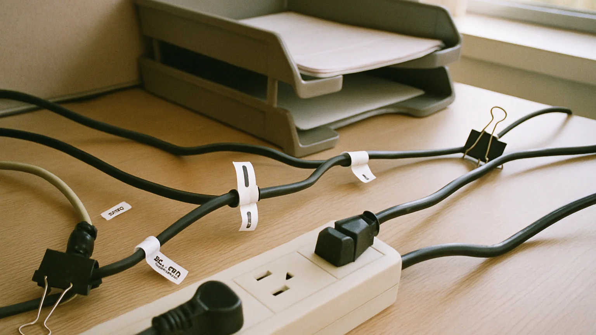

Clamp vs screw mounted trays
A simple supporting guide for making desk cable trays easier to plan, install, and maintain.

Clamp vs screw mounted trays starts with one practical question: what needs to stay reachable after the desk looks clean? In a real desk setup, the winning tray is rarely the biggest one on the page; it is the one that disappears into the routine. Look at where the power strip naturally wants to sit, how often you move the chair, whether monitor arms tug on cords, and whether you need access for chargers that change every week. A good cable tray should make the desk easier to reset after a busy afternoon, not create a hidden shelf of tangled adapters. That practical lens is what separates a neat upgrade from another accessory that needs its own maintenance plan.
Clamp vs screw mounted trays starts with one practical question: what needs to stay reachable after the desk looks clean? In a real desk setup, the winning tray is rarely the biggest one on the page; it is the one that disappears into the routine. Look at where the power strip naturally wants to sit, how often you move the chair, whether monitor arms tug on cords, and whether you need access for chargers that change every week. A good cable tray should make the desk easier to reset after a busy afternoon, not create a hidden shelf of tangled adapters. That practical lens is what separates a neat upgrade from another accessory that needs its own maintenance plan.
Clamp vs screw mounted trays starts with one practical question: what needs to stay reachable after the desk looks clean? In a real desk setup, the winning tray is rarely the biggest one on the page; it is the one that disappears into the routine. Look at where the power strip naturally wants to sit, how often you move the chair, whether monitor arms tug on cords, and whether you need access for chargers that change every week. A good cable tray should make the desk easier to reset after a busy afternoon, not create a hidden shelf of tangled adapters. That practical lens is what separates a neat upgrade from another accessory that needs its own maintenance plan.
Clamp vs screw mounted trays starts with one practical question: what needs to stay reachable after the desk looks clean? In a real desk setup, the winning tray is rarely the biggest one on the page; it is the one that disappears into the routine. Look at where the power strip naturally wants to sit, how often you move the chair, whether monitor arms tug on cords, and whether you need access for chargers that change every week. A good cable tray should make the desk easier to reset after a busy afternoon, not create a hidden shelf of tangled adapters. That practical lens is what separates a neat upgrade from another accessory that needs its own maintenance plan.
Clamp vs screw mounted trays starts with one practical question: what needs to stay reachable after the desk looks clean? In a real desk setup, the winning tray is rarely the biggest one on the page; it is the one that disappears into the routine. Look at where the power strip naturally wants to sit, how often you move the chair, whether monitor arms tug on cords, and whether you need access for chargers that change every week. A good cable tray should make the desk easier to reset after a busy afternoon, not create a hidden shelf of tangled adapters. That practical lens is what separates a neat upgrade from another accessory that needs its own maintenance plan.
Clamp vs screw mounted trays starts with one practical question: what needs to stay reachable after the desk looks clean? In a real desk setup, the winning tray is rarely the biggest one on the page; it is the one that disappears into the routine. Look at where the power strip naturally wants to sit, how often you move the chair, whether monitor arms tug on cords, and whether you need access for chargers that change every week. A good cable tray should make the desk easier to reset after a busy afternoon, not create a hidden shelf of tangled adapters. That practical lens is what separates a neat upgrade from another accessory that needs its own maintenance plan.
Clamp vs screw mounted trays starts with one practical question: what needs to stay reachable after the desk looks clean? In a real desk setup, the winning tray is rarely the biggest one on the page; it is the one that disappears into the routine. Look at where the power strip naturally wants to sit, how often you move the chair, whether monitor arms tug on cords, and whether you need access for chargers that change every week. A good cable tray should make the desk easier to reset after a busy afternoon, not create a hidden shelf of tangled adapters. That practical lens is what separates a neat upgrade from another accessory that needs its own maintenance plan.
Checklist
- Confirm the path before sticking or screwing anything in.
- Keep chargers reachable.
- Leave slack for monitor and laptop movement.
- Label cords that look alike.